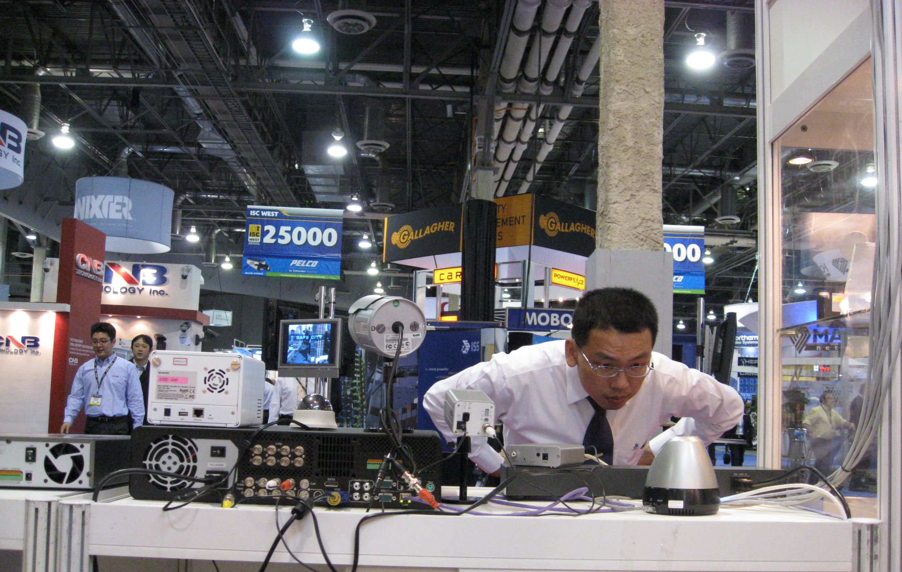
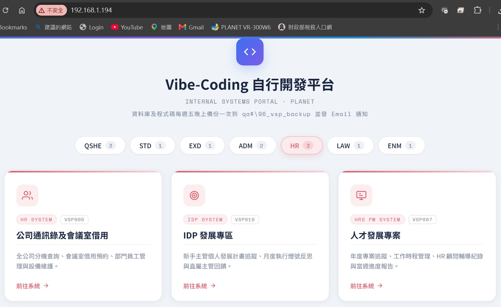
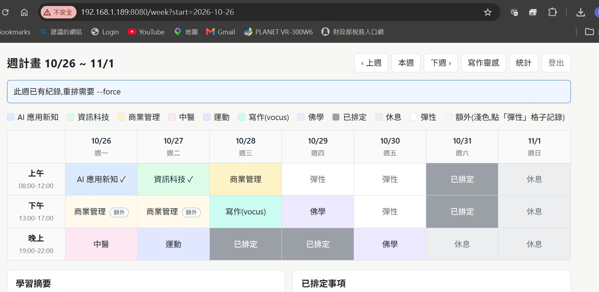
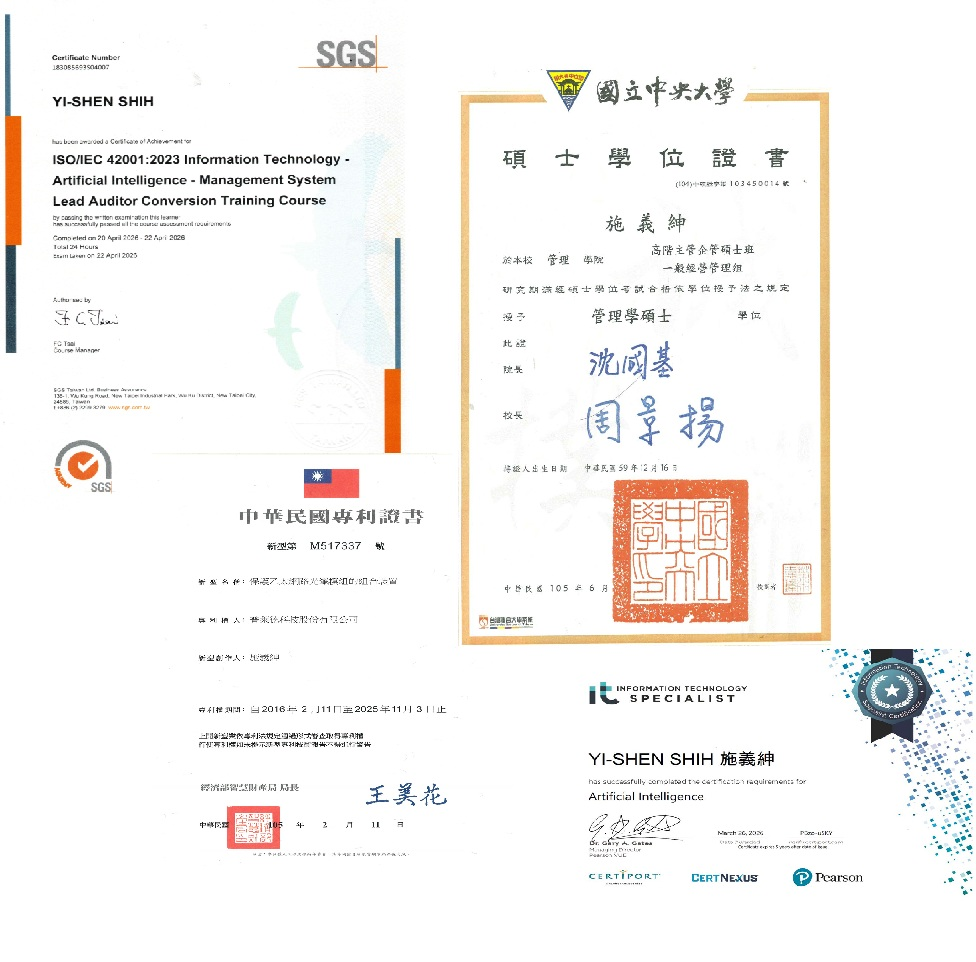
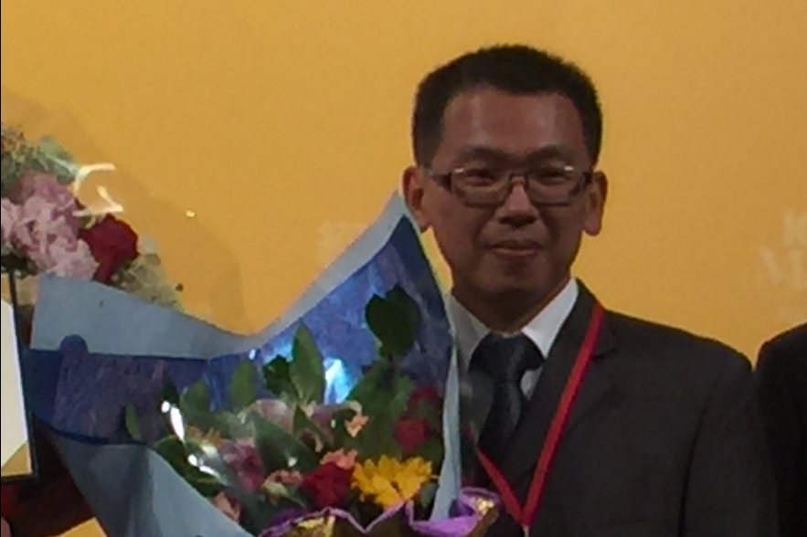
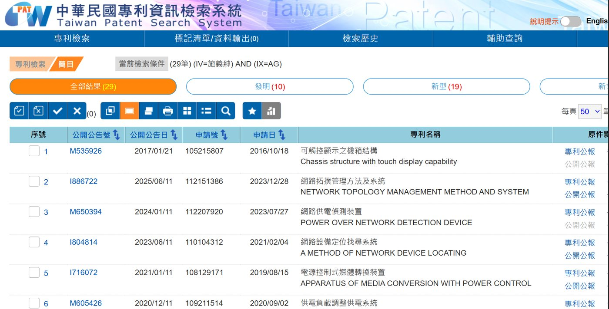
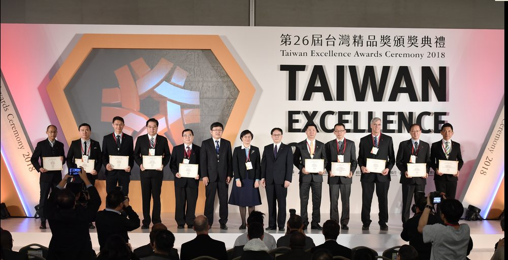
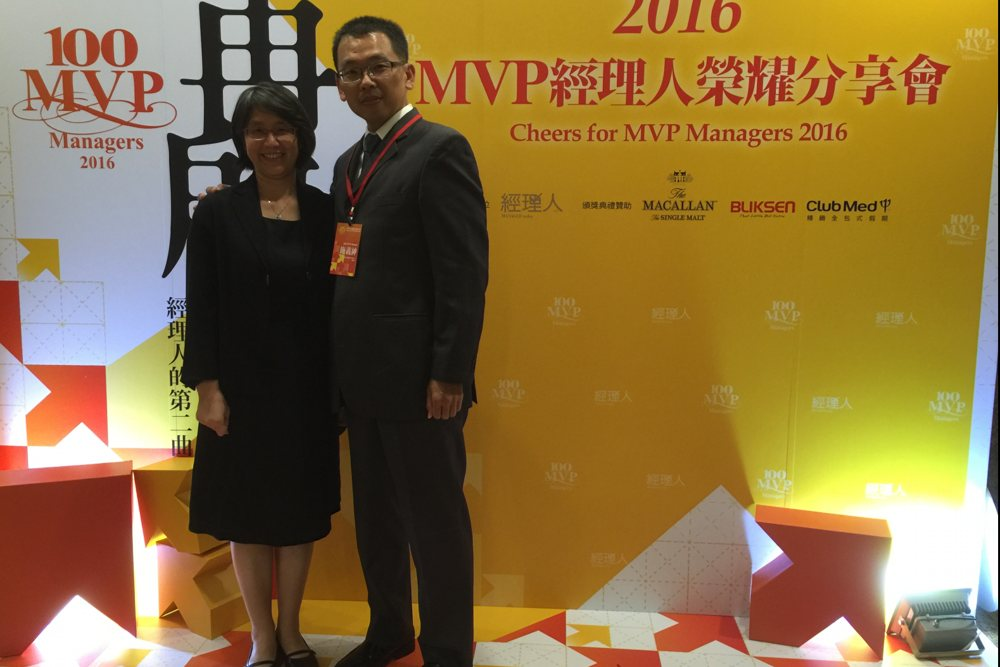

結合三十年資通訊系統思維與深厚跨國培訓經驗，協助企業與個人將生成式 AI、開源架構與治理標準轉化為具體生產力。 Bridging 30+ years of ICT systems architecture with global technical enablement to turn Generative AI, open-source systems, and ISO governance into verified productivity.
兼顧國際治理規範、邊緣自主運算與業務流程自動化 Integrating international governance standards, edge computing, and workflow automation.
ISO/IEC 42001 (AIMS) ｜ ISO 9001 ｜ AI 生命週期風險評估 ISO/IEC 42001 (AIMS) | ISO 9001 | AI Lifecycle Risk Assessment
傳承二十餘年國際標準與品質體系推動經驗，協助企業建立可查證、合規且安全自主的 AI 管理與風險防禦架構。 Leveraging 20+ years of quality systems leadership to build verifiable, compliant, and sovereign enterprise AI governance models.
Ollama ｜ Gemma/Llama ｜ 樹莓單板運算 ｜ NVMe 資源最佳化 Ollama | Gemma/Llama | Single-Board SBC | NVMe Cache Optimization
專注於高性價比、資料高度自主的邊緣運算解決方案，打破對外部雲端 API 的依賴與資安疑慮。 Deploying sovereign, cost-effective on-premise LLMs on edge hardware, ensuring complete data security and offline reliability.
結構化 Prompt ｜ Custom AI Agents / Gems ｜ Markdown AI Skills Structured Prompting | Custom AI Agents / Gems | Markdown AI Skills
將複雜業務邏輯與流程轉化為標準化 AI Agent 協調規則，實現人機協同的精準交付。 Formulating systematic prompt frameworks and Markdown-based multi-agent skills to translate complex tasks into precision outcomes.
Google Apps Script (GAS) ｜ Web Apps ｜ Workspace 深度整合 Google Apps Script (GAS) | Web Apps | Workspace Deep Integration
消除日常繁瑣機械式流程，打造輕量、高穩定度且完全貼合業務邏輯的自動化管理工具。 Eliminating operational friction by building customized GAS Web Apps and automated dashboards embedded into everyday workflows.
階梯式教案 ｜ Hands-on 工作坊 ｜ 人機協同思維 ｜ 跨國培訓底蘊 Tiered Curriculums | Hands-on Workshops | Human-AI Collaboration | Global Pedagogy
具備逾二十年跨國客戶教育訓練深厚底蘊，擅長將深奧架構轉化為平實易懂的步驟，引導跨部門團隊快速上手。 Grounded in two decades of international customer technical enablement, translating complex technical models into pragmatic, scalable curriculums.
歷年國際技術推廣、實體原型部署、自動化開發、專利與獎項紀錄 Records of international enablement, edge AI prototyping, systems integration, patents, and awards.

assets/gallery-training.jpg主持海外客戶培訓、德國 CeBIT 展會與企業實作教學。 International customer workshops and CeBIT presentations.

assets/gallery-edge-ai.jpg樹莓派單機運行本地開源模型與資源調優實機。 Running local LLMs on resource-optimized single-board units.

assets/gallery-automation.jpg自主開發 Google Apps Script 看板，整合表單與平台。 Custom GAS dashboards streamlining operational tracking.

assets/gallery-iso.jpgISO/IEC 42001 研習證明與中央大學 EMBA 資歷。 ISO 42001 AIMS auditor training & NCU EMBA credentials.

assets/gallery-mvp-2016.jpg組織管理創新類：導入生產輔助治具，節省 100 萬元設備採購費，縮短工時 20%。 Organizational Innovation category: introduced production jigs, saving NT$1M in equipment costs and cutting labor hours by 20%.
官方得獎頁 ↗ Official award page ↗
assets/gallery-patents.jpg台灣專利檢索系統以發明人檢索共 29 筆（發明 10、新型 19）；加計中國、美國，專利及申請案逾 30 項。 29 records in Taiwan's patent search system by inventor name (10 invention, 19 utility model); 30+ patents and applications including China and the US.
普萊德科技 2014 至 2024 年連續獲獎；圖為 2021 年代表領獎（再生能源管理控制器系列）。 PLANET Technology won every year from 2014 to 2024; shown here: 2021 award (Renewable Energy Management Controller Series).

assets/gallery-tea-2018.jpg2018 年頒獎典禮，得獎企業代表與頒獎貴賓同台合影（左起第 4 位為施義紳）。 2018 ceremony: award-winning company representatives on stage with presenting guests (4th from left: Tom Shih).

assets/gallery-mvp-ceremony.jpg與太太於 MVP 經理人榮耀分享會會場合影。 With his wife at the MVP Managers celebration event.
橫跨三十年技術研發、國際業務推廣、品質體系與 AI 轉型顧問 Three decades of systems architecture, international enablement, and AI advisory.
AI 實務落地 ｜ ISO/IEC 42001 (AIMS) AI Practical Implementation | ISO/IEC 42001 (AIMS)
知名資通訊與網通品牌企業 Leading Global ICT & Networking Brand
知名資通訊與網通品牌企業 Leading Global ICT & Networking Brand
知名資通訊設備企業 Emerging Network Equipment Enterprise